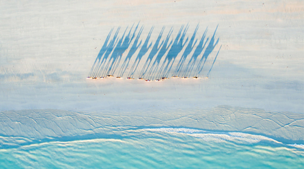
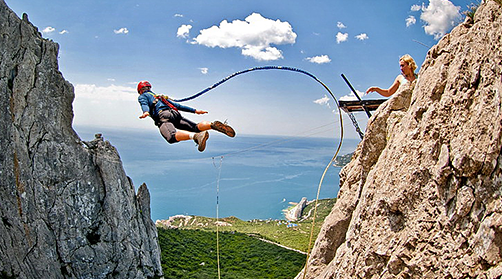

<!DOCTYPE html>
<html lang="ru">
    <head>
        <meta charset="utf-8">
        <meta http-equiv="X-UA-Compatible" content="IE=edge">
        <meta name="viewport" content="width=device-width, initial-scale=1">
        <title>TEST</title>
        <link rel="stylesheet" href="css/style.css">
        <link rel="stylesheet" href="css/font-awesome.css">
    </head>
    <body>
        <div class="header">
            <div class="container">
                <div class="content_header">
                    <div class="logo_section">
                        <div class="logo_block"></div>
                        <div class="site_name"><p>Сеть турагенств<br>«Солнце в кругу»</p>
                        </div>
                    </div>
                </div>
                <div class="content_header">
                    <div class="phone">
                        <p>044 123-45-67</p>
                        <p>обратный звонок</p>
                    </div>
                </div>
                <div class="content_header">
                    <div class="social">
                        <a href=""></a>
                        <a href=""></a>
                        <a href=""></a>
                    </div>
                </div>
            </div>
        </div>
        <div class="container">
            <div class="content_container">
            <div class="content_big_img">
                <div class="banner_container">
                <div class="banner">
                    <h2>Тур<br>в Созополь,<br>Болгария</h2>
                        <p>КОД ТУРА</p>
                    <div class="tour_id">
                        <p>3094119</p>
                    </div>
                </div>
                </div>
            </div>
        </div>
    </div>
        <div class="container">
            <div class="hotel_id">
                    <span class="name">Aquamarine hotel</span>
                    <span class="reiting">
                        <i class="fa fa-star" aria-hidden="true"></i>
                        <i class="fa fa-star" aria-hidden="true"></i>
                        <i class="fa fa-star" aria-hidden="true"></i>
                    </span>
                    <span class="price">$256</span>
                <div class="hotel_reiting">
                    <ul>
                        <li>Оценка отеля<p class="gray">45 отзывов</p></li>
                            <li><p class="total_reiting">8.4</p></li>
                        <li>номер<p>8.9</p></li>

                        <li>питание<p>8.1</p></li>

                        <li>сервис<p>7.9</p></li>

                        <li>инфраструктура<p>8.9</p></li>
                    </ul>
                </div>
            </div>
            <div class="sun_days">
                <h1>320</h1>
                <p>солнечных<br>дней в году</p>
            </div>
        </div>
        <div class="container">
            <div class="catalog_item1">
                
                <div class="tour_descr">
                    <span class="tour_name">Шелковый путь</span>
                    <span class="tour_price">$987</span><br>
                    <span class="type_of_tour">
                        Экстремальный маршрут
                    </span>
                </div>
            </div>
            <div class="catalog_item2">
                
                <div class="tour_descr">
                    <span class="tour_name">Не дай Бог не любишь</span>
                    <span class="tour_price">$59</span><br>
                    <span class="type_of_tour">
                        Роупджампинг
                    </span>

                </div>
            </div>
        </div>
        <div class="container">
            <div class="text_big">
                <span>36,6 градусов по цельсию и познаватель-<br>ная физика</span>
            </div>
        </div>

        <div class="container">
            <div class="text_right">
                <h1>0,71</h1>
                <h2>WHR здоровой женщины</h2>
                <h3>Один из весьма надежных показателей здоровья, фертильности, как раз и является &laquo;waistto hip ratio&raquo;.</h3>
            </div>
            <div class="text_left">
                <p class="text_block1">Никто не задумывался почему температура человеческого тела 36,6 С? Почему не иная? Почему не равна дневной температуре окружающего пространства к примеру? Но почему так произошло? Первая причина лежит от нас на временной оси в прошлом на расстоянии в несколько миллиардов лет. Именно тогда появилась жизнь.</p>

                <p class="text_block2">
                Грубо говоря первичные репликаторы огородились защитной оболочкой от остальной части океана — создав клетки. Клетки это замкнутые водные резервуары, в которых вся жизнедеятельность проходит в водной среде. И все сухопутные организмы концептуально это машины выживания репликаторов, мобильная (в случае с животными), благоприятная водная среда для репродукции, окруженная защитной оболочкой от внешнего мира.
                </p>

                <h3>Ищем ответ</h3>

                <p class="text_block3">
                Что интересно, все теплокровные функционируют в пределах той же области температур что и человек.
                Например температура у лошадей 37,5-38,5; у коров 37,5-39,5; кур 40,5-42,5; свиней 39,0-40,0; кошек 38,0-39,5; обезьян 38,1; голубей 41,0-44,0. Ответ лежит в области нет, не биологии. А в области физики воды.
                </p>

                <p class="text_block4">
                Дело в том, что теплоемкость воды нелинейно зависит от температуры. Теплоемкость это количество энергии, которое необходимо потратить для того что бы нагреть 1 кг вещества на 1 градус. При увеличении температуры она как бы пикирует как штурмовик, и возносится ввысь после прохождения нижней точки в 36,8 градусов Цельсия. В организме человека вода составляет около 65-70%, её теплоемкость огромна.
                </p>

                <p class="text_block5">
                90% энергии получаемой с пищей, теплокровные потому тратят только лишь на поддержание постоянной температуры внутренней среды. На нагревание воды. Потому эта ямка, минимум, в котором нужно было тратить минимальное количество энергии на поддержание своего состояния, как аттрактор, стягивал на себя на протяжении эволюции все «модели» теплокровных. Фенотипы, с рабочей температурой иных диапазонов были слишком «прожорливыми» и отсеивались отбором.
                </p>

                <h4>Хлорофилл и красота</h4>
                <p class="text_block6">
                Могло случится так что небо было бы ядовито-желтое а не голубое. Трава так же красная. Нравился бы нам такой пейзаж? Почему красный, ярко-желтый, создают чувство неспокойствия и не подходят для идилических райских картин ландшафтов как голубой и зеленый? Дело не в них а в нас. Мы продукт эволюции, продукт среды в которой мы развивались. Что и было показано на примере температуры тела.
                </p>

                <p class="text_block7">
                Начну с далека, так уж нужно, ничего не поделаешь… Зеленым цветом на картинке окрашена трава, трава это растение. Первыми вышли задолго до животных на сушу растения. Они сформировали то первичное окружение для живых организмов, создали им условия существования на суше. Стали источником пищи и крова, ведь животные гетеротрофы. Растения же в основном автотрофы. Так вышло что у растений при участии хлорофилла осуществляется процесс фотосинтеза. А по совместительству он так же зелёный пигмент, обусловливающий окраску хлоропластов растений в зелёный цвет.
                </p>

                <p class="text_block8">
                    Так же интересна физическая причина наших понятий красоты.
                </p>

                <div class="table">
                    <table>
                        <tr>
                            <th></th>
                            <th>Хлорофилл a</th>
                            <th>Хлорофилл b</th>
                            <th>Хлорофилл c1</th>
                            <th>Хлорофилл c2</th>
                            <th>Хлорофилл cd</th>
                        </tr>
                        <tr>
                            <td>Формула</td>
                            <td>C<sub>55</sub>H<sub>72</sub>O<sub>5</sub>N<sub>4</sub>Mg</td>
                            <td>C<sub>55</sub>H<sub>70</sub>O<sub>6</sub>N<sub>4</sub>Mg</td>
                            <td>C<sub>35</sub>H<sub>30</sub>O<sub>5</sub>N<sub>4</sub>Mg</td>
                            <td>C<sub>35</sub>H<sub>28</sub>O<sub>5</sub>N<sub>4</sub>Mg</td>
                            <td>C<sub>54</sub>H<sub>70</sub>O<sub>5</sub>N<sub>4</sub>Mg</td>
                        </tr>
                        <tr>
                            <td>C2 группа</td>
                            <td>-CH<sub>3</sub>/td>
                            <td>-CH<sub>3</sub></td>
                            <td>-CH<sub>3</sub></td>
                            <td>-CH<sub>3</sub></td>
                            <td>-CH<sub>3</sub></td>
                        </tr>
                        <tr>
                            <td>C3 группа</td>
                            <td>-CH=CH<sub>2</sub></td>
                            <td>-CH=CH<sub>2</sub></td>
                            <td>-CH=CH<sub>2</sub></td>
                            <td>-CH=CH<sub>2</sub></td>
                            <td>-CHO</td>
                        </tr >
                    </table>
                </div>

                <p class="text_block9">Как найти эти консервативные признаки? Наиболее часто рассматривают 5 источников информации о них:<br>
                — эмбриологические исследования;<br>
                — тератологические данные;<br>
                — сравнительно-морфологические данные;<br>
                — анализ врожденных поведенческих программ (этологические данные);<br>
                — изучение взаимосвязи с другими видами.
                </p>

                <p class="text_block10">Я потратил на этот макет: 4:30 часa</p>
            </div>
            <div class="line"></div>
            <div class="test_descr">
                <p>Тестовое задание на вакансию верстальщика в компанию <a href="#">Fleeks</a></p>
            </div>

            <div class="social_footer">
                <a href=""></a>
                <a href=""></a>
                <a href=""></a>
            </div>
        </div>
        <script src="http://localhost:54417/livereload.js"></script>
        <script type="text/javascript" src="http://cdn.mathjax.org/mathjax/2.0-latest/MathJax.js?config=TeX-MML-AM_HTMLorMML-full"> </script>
    </body>
</html>
